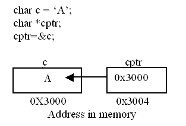

Pointers in C are easy and fun to learn. Some C programming tasks are performed more easily with pointers, and other tasks, such as dynamic memory allocation, cannot be performed without using pointers. So it becomes necessary to learn pointers to become a perfect C programmer. Let's start learning them in simple and easy steps.
As you know, every variable is a memory location and every memory location has its address defined which can be accessed using ampersand (&) operator, which denotes an address in memory. Consider the following example, which will print the address of the variables defined:
#includeA pointer is a variable whose value is the address of another variable, i.e., direct address of the memory location. Like any variable or constant, you must declare a pointer before you can use it to store any variable address. The general form of a pointer variable declaration is:
type *var-name;Here, type is the pointer's base type; it must be a valid C data type and var-name is the name of the pointer variable. The asterisk * you used to declare a pointer is the same asterisk that you use for multiplication. However, in this statement the asterisk is being used to designate a variable as a pointer. Following are the valid pointer declaration:
int *ip; /* pointer to an integer */The actual data type of the value of all pointers, whether integer, float, character, or otherwise, is the same, a long hexadecimal number that represents a memory address. The only difference between pointers of different data types is the data type of the variable or constant that the pointer points to.
There are few important operations, which we will do with the help of pointers very frequently. (a) we define a pointer variable (b) assign the address of a variable to a pointer and (c) finally access the value at the address available in the pointer variable. This is done by using unary operator * that returns the value of the variable located at the address specified by its operand. Following example makes use of these operations:
#includeIt is always a good practice to assign a NULL value to a pointer variable in case you do not have exact address to be assigned. This is done at the time of variable declaration. A pointer that is assigned NULL is called a null pointer.
The NULL pointer is a constant with a value of zero defined in several standard libraries. Consider the following program:On most of the operating systems, programs are not permitted to access memory at address 0 because that memory is reserved by the operating system. However, the memory address 0 has special significance; it signals that the pointer is not intended to point to an accessible memory location. But by convention, if a pointer contains the null (zero) value, it is assumed to point to nothing.
Home